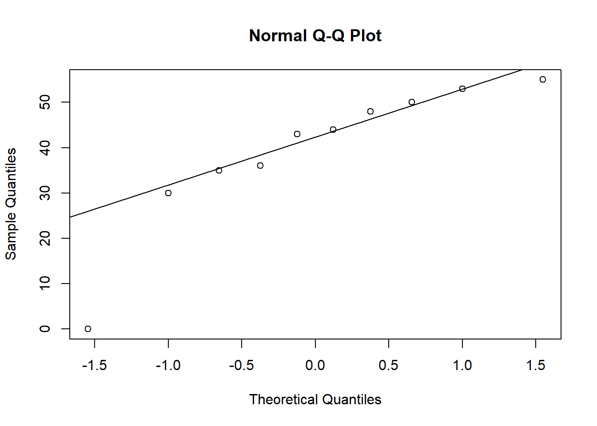
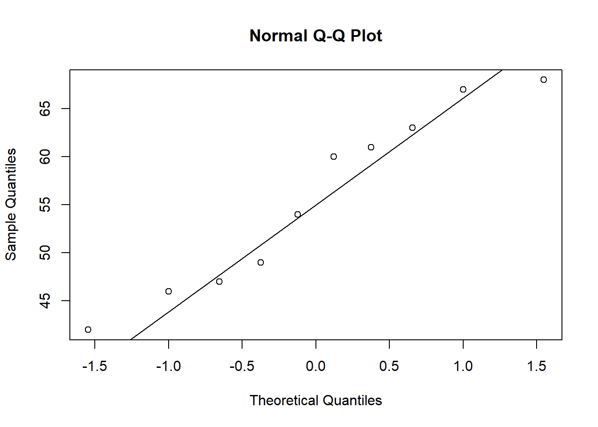
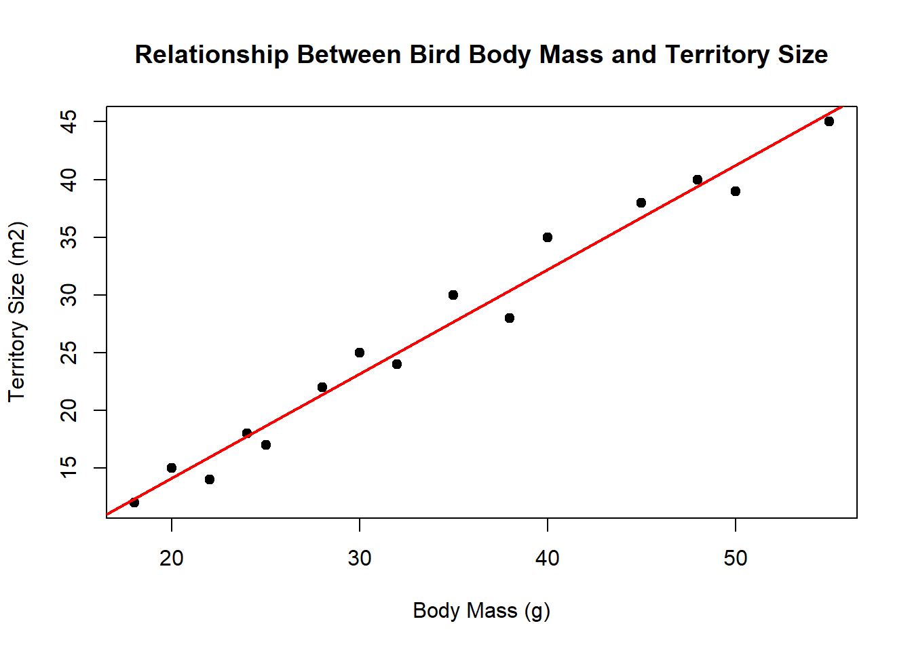

urban <- c(44,48,55,35,0,36,50,43,53,30)
rural <- c(47,49,68,42,63,61,60,54,67,46)
qqnorm(urban)
qqline(urban)
qqnorm(rural)
qqline(rural)
Non parametric tests are often seen as the next point of call to parametric tests when assumptions are not met. As explained Parametric tests rely on variance and means while using a set of assumptions, such as even distribution to give you an output. When these assumptions are not met, you may move onto non parametric tests, as these more so use medians and ranks while not needing any predetermined assumption.
I will note under each section which Parametric test is the partner to the ones below, but make sure to always check your assumptions first! (See chapter 4)
This test is used to compare the differences between two independent groups when the distribution is not even and you typically have a small sample size (Less than 30), most similar to the two-sample t-test.
An example would be measuring the weight/beak length/wingspan of birds in woodland A vs Woodland B, where the data is not evenly distributed and you only managed to sample a small amount of birds!
While they do not follow the assumptions of Parametric tests they do have some:
The syntax for this is as follows:
wilcox.test(VARIABLE NAME 1, VARIABLE NAME 2)
For this we will use a fake data set, measuring foraging time of birds in Urban and Rural habitats, making sure to check the distributions first:
urban <- c(44,48,55,35,0,36,50,43,53,30)
rural <- c(47,49,68,42,63,61,60,54,67,46)
qqnorm(urban)
qqline(urban)
qqnorm(rural)
qqline(rural)
Then we can perform the test :
wilcox.test(urban, rural)
Wilcoxon rank sum exact test
data: urban and rural
W = 18, p-value = 0.01469
alternative hypothesis: true location shift is not equal to 0As you can see there are 2 values w and the p-value.
| Output | Meaning |
|---|---|
| w | This is the test value, its the sum of positive and negative ranks |
| p | This value is created from the last two, its what we will use to test for significance |
So, we know our value of significance, which is alpha (α = 0.05), and we have had our p-value outputted from our test, this is what we need to see if there is significance in our data. In this case, as ‘p < α = 0.05’ , there is significance in our data. So we would REJECT our null hypothesis
This test is used to determine whether or not there is a statistically significant difference between the medians of three or more INDEPENDENT groups; this is the equivalent of a one-way ANOVA.
An example that we could use would be whether there are differences in the number of feeding visits to a feed source across habitats:
While they do not follow the assumptions of Parametric tests, they do have some:
Here is our fake dataset:
habitat <- c(
rep("Woodland", 10),
rep("Farmland", 10),
rep("Urban", 10)
)
feeding_visits <- c(
# Woodland
12, 15, 14, 18, 13, 16, 14, 15, 45, 60,
# Farmland
5, 7, 6, 8, 9, 7, 6, 8, 35, 50,
# Urban
20, 22, 25, 21, 24, 23, 22, 26, 70, 85
)
birds <- data.frame(habitat, feeding_visits)
birds habitat feeding_visits
1 Woodland 12
2 Woodland 15
3 Woodland 14
4 Woodland 18
5 Woodland 13
6 Woodland 16
7 Woodland 14
8 Woodland 15
9 Woodland 45
10 Woodland 60
11 Farmland 5
12 Farmland 7
13 Farmland 6
14 Farmland 8
15 Farmland 9
16 Farmland 7
17 Farmland 6
18 Farmland 8
19 Farmland 35
20 Farmland 50
21 Urban 20
22 Urban 22
23 Urban 25
24 Urban 21
25 Urban 24
26 Urban 23
27 Urban 22
28 Urban 26
29 Urban 70
30 Urban 85Now, to perform the test, the syntax is as follows:
kruskal.test(WHAT IS BEING MEASURED ~ WHAT IS CHANGED, data = DATA FRAME NAME)
kruskal.test(feeding_visits ~ habitat, data = birds)
Kruskal-Wallis rank sum test
data: feeding_visits by habitat
Kruskal-Wallis chi-squared = 11.776, df = 2, p-value = 0.002773As you can see there are three values; KW Value, df, and the p-value.
| Output | Meaning |
|---|---|
| KW Value | This is the test value calculated from ranked data |
| df | Degrees of freedom. |
| P value | This is your p value , it shows whether there is a statistical significance |
You’ll notice that you’ve only got 1 p-value, so next we need to perform a pairwise Post hoc in order to decipher the significance between the groups.
The syntax for the pairwise post hoc is as follows:
pairwise.wilcox.test(DATA NAME\(COLUMN OF MEASURE,** **DATANAME\)COLUMN OF MEASURE, p.adjust.method = “bonferroni”)
In stats, you can produce false positives; this increases the more stats you perform on a dataset. So for this post hoc, we can adjust the p-values using the Bonferroni method; this essentially makes it harder to produce a significant value. So for our example data:
pairwise.wilcox.test(
birds$feeding_visits,
birds$habitat,
p.adjust.method = "bonferroni"
)Warning in wilcox.test.default(xi, xj, paired = paired, ...): cannot compute
exact p-value with ties
Warning in wilcox.test.default(xi, xj, paired = paired, ...): cannot compute
exact p-value with ties
Warning in wilcox.test.default(xi, xj, paired = paired, ...): cannot compute
exact p-value with ties
Pairwise comparisons using Wilcoxon rank sum test with continuity correction
data: birds$feeding_visits and birds$habitat
Farmland Urban
Urban 0.034 -
Woodland 0.042 0.034
P value adjustment method: bonferroni So, you may receive \(warning\) messages in your console, such i have here. These are not errors and won’t necessarily affect your results; they appear because you have values in the groups that are the same, so R cannot calculate an accurate p-value.
Once you run the pairwise post hoc, you will see a table of comparisons that shows the degree of significance between groups. In this example, all groups differed significantly.
A Kruskal–Wallis test found a significant difference in bird feeding visits between habitat types, χ²(2) = 11.776, p = 0.0028. Pairwise Wilcoxon post hoc tests with Bonferroni correction showed significant differences between farmland and urban habitats (p = 0.034), farmland and woodland habitats (p = 0.042), and woodland and urban habitats (p = 0.034).
In statistics, we use correlation to refer to the strength of the relationship between two variables and in which way the relationship directs. The value of correlation is between -1 and 1with he possibilities being :
| Output | Meaning |
|---|---|
| -1 | Negative relationship |
| 0 | No relationship |
| 1 | positive relationship |
Spearmans rank is a type of correlation that can be used between two ranked variables, an example we can use could be ‘Is there a relationship between bird body mass and territory size?’, here is our data set:
body_mass <- c(
18, 20, 22, 24, 25,
28, 30, 32, 35, 38,
40, 45, 48, 50, 55
)
territory_size <- c(
12, 15, 14, 18, 17,
22, 25, 24, 30, 28,
35, 38, 40, 39, 45
)
birds <- data.frame(body_mass, territory_size)
birds body_mass territory_size
1 18 12
2 20 15
3 22 14
4 24 18
5 25 17
6 28 22
7 30 25
8 32 24
9 35 30
10 38 28
11 40 35
12 45 38
13 48 40
14 50 39
15 55 45Now we perform the test, the syntax is as follows:
cor.test(DATANAME\(VARIABLE NAME 1,** **DATANAME\)VARIABLE NAME 2, method = “spearman”)
cor.test(
birds$body_mass,
birds$territory_size,
method = "spearman"
)
Spearman's rank correlation rho
data: birds$body_mass and birds$territory_size
S = 10, p-value < 2.2e-16
alternative hypothesis: true rho is not equal to 0
sample estimates:
rho
0.9821429 As you can see there are three values produced:
| Output | Value | What it means |
|---|---|---|
| S | 10 | The Spearman’s test statistic calculated from the ranked data. |
| p (rho) | 0.982 | Shows the strength and direction of the relationship. |
| p-value | < 0.001 | Shows whether the relationship is statistically significant. |
We conducted a Spearman’s rank correlationto investigate the relationship between bird body mass and territory size. There was a statistically significant, very strong positive correlation between body mass and territory size, p(rho) = 0.982, p < 0.001. This indicates that birds with a greater body mass tended to have larger territories.
Furthermore, you will want to put this into a graph so that you can put a figure to the value that has been produced:
plot(
birds$body_mass,
birds$territory_size,
main = "Relationship Between Bird Body Mass and Territory Size",
xlab = "Body Mass (g)",
ylab = "Territory Size (m2)",
pch = 19
)
abline(
lm(territory_size ~ body_mass, data = birds),
lwd = 2,
col = "red"
)
This test is used when you have categories and want to know whether they are related; it compares expected and observed results and assesses significance based on the differences.
An example could be,’ Is there association between bird species and habitats’
Here is the dataset:
birds <- matrix(
c(
35, 10, 5, # Blackbird
15, 30, 10, # Blue tit
5, 15, 35 # Woodpigeon
),
nrow = 3,
byrow = TRUE
)
rownames(birds) <- c(
"Blackbird",
"Blue_tit",
"Woodpigeon"
)
colnames(birds) <- c(
"Urban",
"Woodland",
"Farmland"
)
birds Urban Woodland Farmland
Blackbird 35 10 5
Blue_tit 15 30 10
Woodpigeon 5 15 35Then we can perform the test, the syntax is as follows:
chisq.test(DATANAME)
Then we perform the test:
chisq.test(birds)
Pearson's Chi-squared test
data: birds
X-squared = 68.509, df = 4, p-value = 4.684e-14Once again we have three values of importance from the output:
| Output | Value | What it means |
|---|---|---|
| χ² (X-squared) | 68.509 | Measures how different the observed frequencies are from the frequencies expected if species and habitat were unrelated. A larger value indicates a larger difference. |
| df | 4 | Degrees of freedom. . |
| p-value | 4.684 × 10⁻¹⁴ (< 0.001) | Shows whether the association is statistically significant. |
Its important to note that this test does not tell you which categories are responsible for the differnece
A Chi-squared test of independence found a significant association between bird species and habitat type, χ²(4) = 68.509, p < 0.001.
Furthermore, you can work out the standardised residuals for these values; this will allow you to see which variables are a driving force in creating the difference that is indicating significance. Once you do this you will get the following values:
| Standardised residual | Meaning |
|---|---|
| Around 0 | Observed value is close to what was expected |
| > +2 | More observations than expected; likely contributing to the significant result |
| < −2 | Fewer observations than expected; likely contributing to the significant result |
To do this we add “$stdres” to our original syntax, so it would look like this:
chisq.test(birds)$stdres Urban Woodland Farmland
Blackbird 6.396575 -2.581074 -3.909725
Blue_tit -1.368951 3.887822 -2.581074
Woodpigeon -4.873467 -1.368951 6.396575Blackbirds are disproportionately common in urban habitat. (6.4)
Blue tits are disproportionately common in woodland. (3.9)
Woodpigeons are disproportionately common in farmland. (6.4)
A Chi-squared test showed a significant association between bird species and habitat type, χ²(4) = 68.51, p < 0.001. Standardised residuals showed that Blackbirds were particularly associated with urban habitats (6.4), Blue tits with woodland (3.9), and Woodpigeons with farmland (6.4).